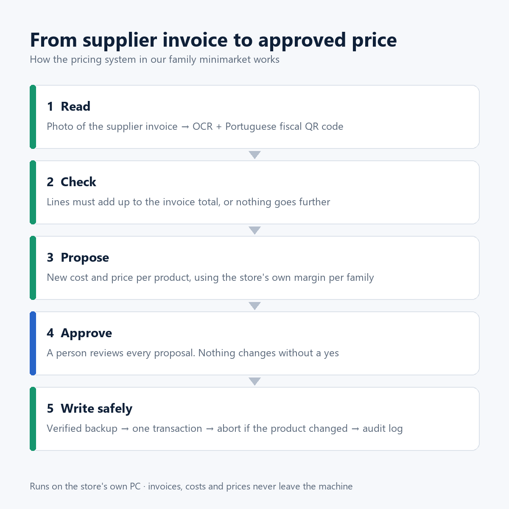
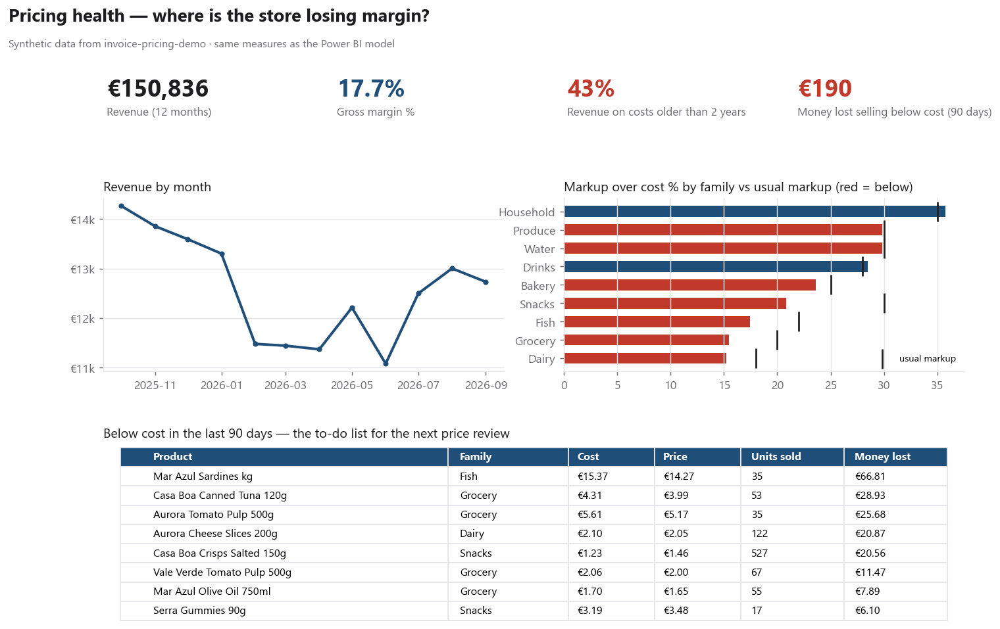

Invoice → Price Live demo
Python · SQLite · fiscal QR code · testing · Power BI · n8n
Prices at a small shop fall behind costs because every supplier invoice has to be read and typed by hand.
In the real store, 37% of sales came from products whose cost had not been updated for more than two years.
This system reads the invoice, proves it against the fiscal QR code VAT rate by VAT rate, proposes costs and
shelf prices, and writes only what a person approved, with a verified backup and an undo log.
0wrong prices from misread numbers: the arithmetic checks caught every one
23 / 23production checks passing after two independent audits
4.2×faster invoice reading on an 8-year-old store PC

The demo below is a public rewrite on synthetic data. It runs the same Python code as the repository
directly in your browser: pick an invoice, change a number and watch the proof fail, propose prices,
write them and undo the write.
Pricing health dashboard
Power BI data model · DAX · CSV export from the system above
One question: where is the store losing margin because prices fell behind costs? Products sold below cost
are ranked by money lost over 90 days, with audit materiality (ISA 320) to separate noise from real losses.

StratForge Live app
TypeScript · React · Tauri
A trading strategy builder: declarative strategies, bar-by-bar backtesting with fees and slippage, and tests
that show whether a result is robust or overfit (walk-forward, Monte Carlo, deflated Sharpe ratio).
An AI analyst calls the engine instead of computing results itself, and sees the chart in every message:
with live on, candles stream from Binance and the analyst can comment on each closed candle
(bring your own model key).
Try it in 3 clicks: pick a candle size above the chart (for example 4h) to load Bitcoin,
then Strategy → "Trend - Golden Cross" → run backtest.
Invoice triage workflow
n8n · Google Sheets · Gmail
Each new invoice runs through the read-only summary command, is logged to a spreadsheet, and triggers
an email: "ready to approve" or "needs a person", with the reasons. The workflow never writes a price.